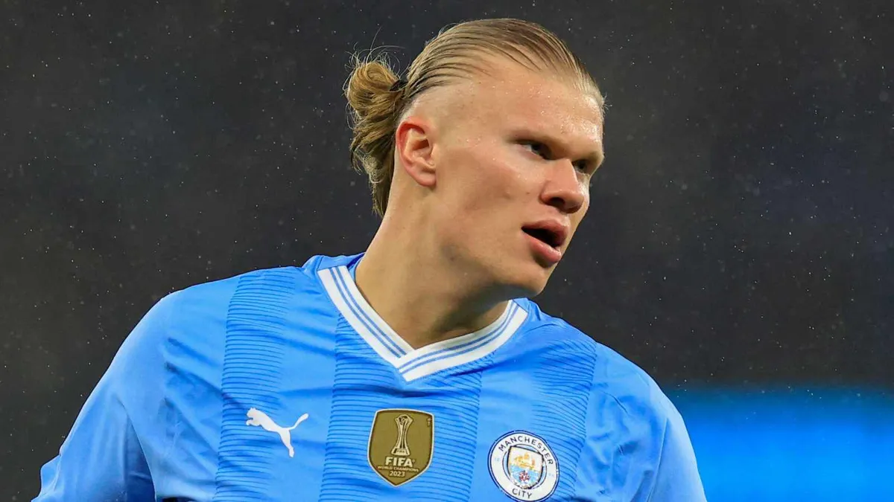
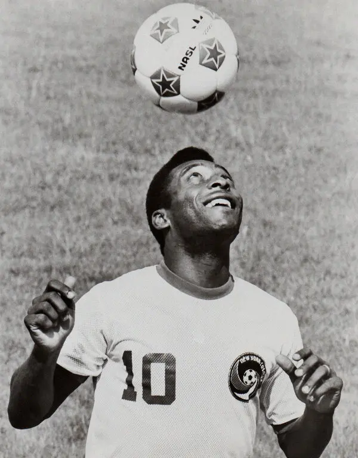
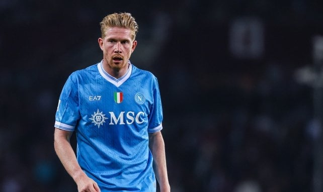

TOP 10 MEJORES FUTBOLISTAS DEL MUNDO
TOP 10 MEJORES FUTBOLISTAD EL MUNDO
LEO MESSI
.webp)
Lionel Messi es considerado uno de los mejores futbolistas de todos los tiempos. Nacido en Rosario, Argentina, destaca por su extraordinaria habilidad técnica, visión de juego y capacidad para definir partidos en momentos clave. Su agilidad, control del balón y precisión en los tiros lo hacen un jugador imparable en el campo. Ha brillado tanto en el FC Barcelona como en el Paris Saint-Germain y con la selección argentina, conquistando múltiples títulos y premios individuales, incluyendo varios Balones de Oro. Messi no solo es un goleador excepcional, sino también un creador de juego que inspira a millones de aficionados en todo el mundo
CRISTIANO RONALDO

Cristiano Ronaldo es uno de los futbolistas más reconocidos y exitosos de la historia. Nacido en Madeira, Portugal, se destaca por su velocidad, potencia física y capacidad goleadora excepcional. Su precisión en los tiros, habilidad aérea y consistencia le han permitido brillar en clubes como Manchester United, Real Madrid, Juventus y actualmente Al Nassr, además de ser un referente en la selección portuguesa. Ronaldo combina profesionalismo, disciplina y liderazgo, siendo un jugador determinante en momentos clave y un modelo a seguir dentro y fuera del campo
MBAPPE
.jpg.webp)
Kylian Mbappé es un futbolista francés considerado uno de los talentos más prometedores y brillantes del fútbol moderno. Destaca por su velocidad explosiva, regate ágil y capacidad de definir frente al arco. Ha sido clave en el Paris Saint-Germain y en la selección de Francia, donde contribuyó al título de la Copa del Mundo 2018. Su combinación de técnica, potencia y visión de juego lo convierte en un delantero imparable y en uno de los referentes del fútbol mundial de su generación
HAALAND

Erling Haaland es un delantero noruego reconocido por su potencia física, velocidad y olfato goleador extraordinario. Destaca por su capacidad para aparecer en los momentos clave, rematar con precisión y aprovechar cualquier oportunidad frente al arco. Ha brillado en clubes como Borussia Dortmund y Manchester City, convirtiéndose en uno de los delanteros más temidos y prometedores del fútbol mundial, capaz de marcar goles con consistencia y desequilibrar cualquier defensa
PELE

Pelé, nacido como Edson Arantes do Nascimento en Brasil, es considerado uno de los mejores futbolistas de la historia. Destacó por su técnica, velocidad, precisión goleadora y visión de juego. A lo largo de su carrera ganó tres Copas del Mundo con la selección brasileña (1958, 1962 y 1970) y dejó un legado imborrable en el Santos FC. Su talento, creatividad y capacidad para decidir partidos lo convirtieron en un ícono global del fútbol y en un referente para generaciones de jugadores
NEYMAR JR

Neymar Jr. es un futbolista brasileño reconocido por su habilidad, creatividad y regate espectacular. Destaca por su capacidad para desequilibrar defensas, generar ocasiones de gol y ejecutar tiros precisos desde cualquier posición. Ha brillado en clubes como Santos, Barcelona y Paris Saint-Germain, así como con la selección de Brasil, dejando huella como uno de los jugadores más talentosos y vistosos del fútbol moderno
DE BRUYNE

Kevin De Bruyne es un mediocampista belga reconocido por su visión de juego, precisión en los pases y capacidad para controlar el ritmo del partido. Destaca por su habilidad para asistir a sus compañeros, disparar desde larga distancia y crear oportunidades de gol de manera constante. Ha brillado en clubes como el Manchester City y con la selección de Bélgica, consolidándose como uno de los centrocampistas más completos y determinantes del fútbol mundial
KARIM BENZEMA

Karim Benzema es un delantero francés reconocido por su inteligencia táctica, técnica depurada y capacidad para asociarse con sus compañeros de equipo. Destaca por su definición frente al arco, movilidad y juego colectivo, lo que lo convierte en un atacante versátil y letal. Ha brillado en clubes como Real Madrid y con la selección francesa, siendo uno de los delanteros más consistentes y respetados del fútbol contemporáneo
LEWANDOSKI

Robert Lewandowski es un delantero polaco conocido por su capacidad goleadora, precisión y posicionamiento excepcional dentro del área. Destaca por su fuerza, técnica y eficiencia frente al arco, lo que le permite marcar goles de manera constante. Ha brillado en clubes como Borussia Dortmund, Bayern Múnich y FC Barcelona, consolidándose como uno de los delanteros más prolíficos y completos del fútbol moderno
SALAH

Mohamed Salah es un delantero egipcio reconocido por su velocidad, agilidad y capacidad para definir con precisión frente al arco. Destaca por su habilidad para desbordar defensas, generar oportunidades y marcar goles decisivos. Ha brillado en clubes como el Chelsea, Roma y Liverpool, convirtiéndose en uno de los atacantes más peligrosos y consistentes del fútbol mundial